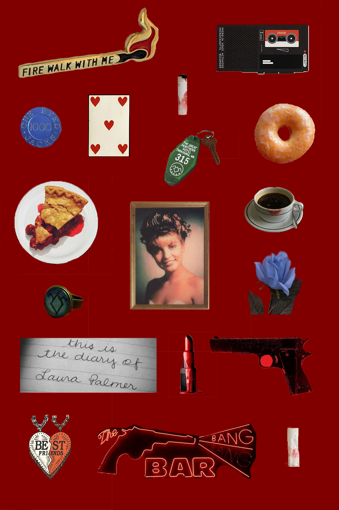

everything is made of something and can be broken down into components.
The human body is made up of different organs - lungs, heart, and brain.
If we zoom in, we see smaller parts - different types of cells.
However, at the most basic level, everything living and non-living consists of atoms, and they form into larger structures - molecules.
In that case, we get a sense of diversity and freedom to determine what the world around us consists of.
My theme explores the concept of composition through the examples of inanimate objects, phenomenons, and other non-physical products, such as texts, books, and articles.
This week, I chose "Twin Peaks" as a theme of my research, and using a collage, I tried to highlight recurring physical objects that play an essential part in the plot. For instance, the canvas includes pictures of Laura Palmer, her diary entry, and a red lipstick that most female actresses use in the series. Other objects, such as a blue flower, a ring, playing cards, and a necklace, are symbolic and frequently appear in the scenes!!
